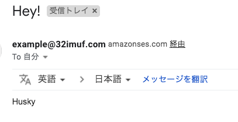
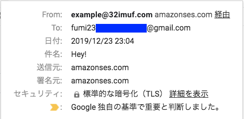
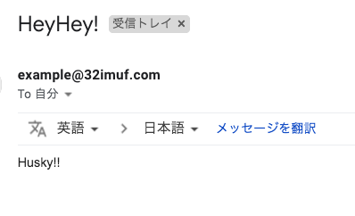
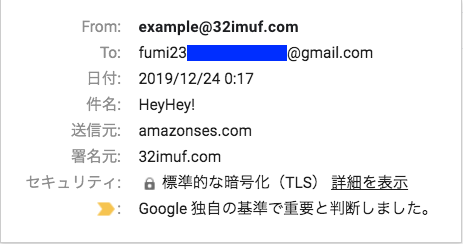
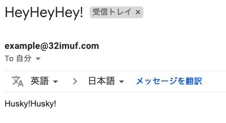
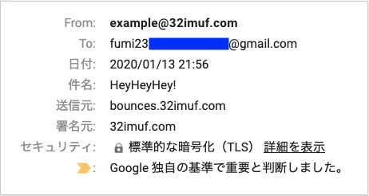

目次
リファレンス/ガイド
Amazon SES とは: https://docs.aws.amazon.com/ja_jp/ses/latest/DeveloperGuide/Welcome.html
Amazon SES クイック スタート: https://docs.aws.amazon.com/ja_jp/ses/latest/DeveloperGuide/quick-start.html
説明
Amazon SES (Amazon Simple Email Service)
Amazon SES は、ユーザー自身の E メールアドレスとドメインを使用して E メールを送受信するための、簡単で費用効率の高い方法を提供する E メールプラットフォームです。
導入の流れ
「 ドメイン検証 」もしくは「 E メールアドレス検証 」する
-
Eメールを認証する
Sender Policy Framework (SPF) を使った E メールの認証
ドメインキーアイデンティファイドメール (DKIM) を使った E メールの認証
-
DMARC (Domain-based Message Authentication, Reporting and Conformance) に準拠する
ドメインの DMARC ポリシーのセットアップ
SPF による DMARC への準拠
DKIM による DMARC への準拠
本番運用するには...
1. ドメイン検証
「E メールアドレスの検証」 or 「ドメイン検証」 のいずれかを行う必要がある
ドメインごと検証すると、対象ドメインのすべての E メールアドレスを検証することになるため、(そのドメインの) E メールアドレスを個別に検証する必要がない
「ドメイン検証」は、AWS リージョンごとに必要
検証対象のドメインが Route 53 の DNS サービスを使用していて、Route 53 用の同じアカウントで AWS マネジメントコンソール にサインインしている場合、 Amazon SES コンソール内からすぐに DNS サーバーを更新できるらしい (わたしは別の DNS プロバイダーでやった)
やりかた
-
このガイドのとおりにやれば、とくにハマることもなくできる
Amazon SES でのドメインの検証: https://docs.aws.amazon.com/ja_jp/ses/latest/DeveloperGuide/verify-domains.html
Amazon SES でのドメインの検証: https://docs.aws.amazon.com/ja_jp/ses/latest/DeveloperGuide/verify-domain-procedure.html
-
検証が完了すると、
Amazon SES コンソールでのドメインのステータスが「pending verification (検証中)」から「verified (検証済み)」に変わり、
Amazon SES から通知 E メールが届く
-
Amazon SES コンソールの「Send a Test Email」からテストメールを送信できる
サンドボックス内にいる場合は、TOアドレスも検証する必要あり (Amazon SES での E メールアドレスの検証 )
-
届いたメールはこんな感じ↓

2. Eメールの認証
Amazon SES での E メールの認証: https://docs.aws.amazon.com/ja_jp/ses/latest/DeveloperGuide/authentication.html
Amazon SES では、E メールの送信に Simple Mail Transfer Protocol（SMTP）が使用されるが、
SMTP 自体は認証を提供しないので、
SPF,DKIM,DMARC への準拠(後述) によって「送信ドメイン認証」対応し、ISP に対して、わたしが送信するメールが「なりすましメール」ではないことを証明しましょう (もし誰かになりすまされたら気付けるようにしましょう)
SPF を使った E メールの認証
-
SPF: Sender Policy Framework
E メールのなりすましを防ぐために設計された E メールの検証標準
ドメイン所有者は SPF を使用して、自分のドメインからメールを送信できるサーバーをメールプロバイダーに通知する (承認済みメールサーバーのリストをドメインの DNS 設定に公開する)
E メールプロバイダーは、ドメインからメッセージを受信すると、ドメインの DNS サーバーの SPF レコードをチェックして、承認されたサーバーから E メールが送信されたことを確認する
-
Amazon SES における SPF を使った E メールの認証: https://docs.aws.amazon.com/ja_jp/ses/latest/DeveloperGuide/spf.html
Amazon SES を介して E メールを送信すると、送信するメッセージはデフォルトで SPF チェックをパスするようになっているけれども、
オプションで、独自の SPF レコードを公開できる
SPF レコードを公開することにより、DMARC に準拠できる
やりかた
3. DMARC に準拠する > SPF による DMARC への準拠 > 1. カスタムの MAIL FROM ドメインを設定する を参照のこと
どうせやるのなら、 DMARC に準拠できるのが良いと思う
DKIM を使った E メールの認証
-
DKIM: ドメインキーアイデンティファイドメール
-
E メールメッセージに署名することで、自分のメッセージが本物であることと送信中に改ざんされていないことを ISP に証明するための標準規格
送信者が暗号化キーで E メールメッセージを署名できる
E メールプロバイダーはこの署名を使用して、メッセージが転送中に第三者によって改ざんされていないことを検証する
詳しくは、 http://dkim.org/ に書いてあるそうです
-
-
Amazon SES における DKIM を使った E メールの認証: https://docs.aws.amazon.com/ja_jp/ses/latest/DeveloperGuide/dkim.html
「送信元」アドレスで使用するドメインでのみ Easy DKIM 設定が必要
リージョンごとに Easy DKIM 設定が必要
3. DMARC に準拠する
-
DMARC: Domain-based Message Authentication, Reporting and Conformance
SPF (Sender Policy Framework) および DKIM (ドメインキーアイデンティファイドメール) を使用して メールスプーフィングを検出するためのメール認証プロトコルです。 DMARC に準拠するため、メッセージは SPF または DKIM のいずれか、または両方で認証される必要があります。 (2)
SPF と DKIM を合わせて活用する技術で、「送信ドメイン認証関連の技術」「レポーティング」という機能がある。 (3)
-
SPF や DKIM それぞれ単体の送信ドメイン認証技術と、DMARC との大きな違いは、以下が挙げられます。 (4)
それぞれ (SPF or DKIM) の認証結果のどちらかが pass すれば良いこと
メール受信者が直接みることができるメールヘッダ上の送信者情報 (From:ヘッダ) を認証すること
メール送信者が認証が失敗したメールの取り扱いを示すことができること
メール送信者が認証結果をメール受信者から受け取る仕組みが用意されていること
SPF や DKIM の合わせ技 (相互補完) + レポーティング
一番詳しくはここを見よ: https://dmarc.org/ (1)
-
出典:
DMARC: https://dmarc.org/
Amazon SES での DMARC への準拠: https://docs.aws.amazon.com/ja_jp/ses/latest/DeveloperGuide/dmarc.html
送信ドメイン認証技術「DMARC」によるなりすましメール対策とDMARCレポートの活用: https://www.dekyo.or.jp/info/2019/02/seminar/5684/
なりすまし対策ポータルナリタイ: https://www.naritai.jp/index.html
やりかた
ドメインの DMARC ポリシーのセットアップ
-
ドメインの DNS 設定に、ドメインの DMARC 設定を指定する TXT レコードを追加する
-
このガイドどおりでとくにむずかしいことはない。TXT レコードの値の説明もここに書いてある。
-
DKIM による DMARC への準拠
-
Amazon SES の Easy DKIM の手順を実行して Easy DKIM を設定する: https://docs.aws.amazon.com/ja_jp/ses/latest/DeveloperGuide/easy-dkim.html
ドメインにおける Easy DKIM のセットアップ: https://docs.aws.amazon.com/ja_jp/ses/latest/DeveloperGuide/easy-dkim-setup-domain.html
このガイドのとおりにやれば、とくにハマることもなくできる
-
検証が完了すると、
Amazon SES コンソールでのドメインのステータスが「pending verification (検証中)」から「verified (検証済み)」に変わり、
Amazon SES から通知 E メールが届く
-
Amazon SES コンソールの「Send a Test Email」からテストメールを送信できる
-
届いたメールはこんな感じ (セットアップ前と比べると、「署名元」が
32imuf.comに変わっている)
-
-
送信元ドメインが DKIM に relaxed ポリシーを使用していることを確認する
$ nslookup -type=TXT _dmarc.32imuf.com Server: 8.8.8.8 Address: 8.8.8.8#53 Non-authoritative answer: # ここに、 adkim=r が含まれるか、または adkim 文字列がまったく存在しない場合は relaxed _dmarc.32imuf.com text = "v=DMARC1;p=quarantine;pct=25;rua=mailto:dmarcreports@32imuf.com" Authoritative answers can be found from:
ドメインのポリシーアラインメントを変更していない場合は、デフォルトで relaxed ポリシーが使用される
SPF による DMARC への準拠
-
カスタムの MAIL FROM ドメインを設定する: https://docs.aws.amazon.com/ja_jp/ses/latest/DeveloperGuide/mail-from.html
デフォルトでは、Amazon SES から送信するメッセージには、MAIL FROM ドメインとして amazonses.com のサブドメインが使用される
デフォルトの MAIL FROM ドメインが E メールを送信したアプリケーション (この場合は Amazon SES) と一致するため、 Sender Policy Framework (SPF) 認証はこれらのメッセージを正常に検証するけれども、
-
カスタム MAIL FROM ドメインを設定することにより、E メールはドメインベースのメッセージ認証、レポート、 および適合性 (DMARC: Domain-based Message Authentication, Reporting and Conformance) に準拠できる
SPF で DMARC に準拠する唯一の方法は、カスタム MAIL FROM ドメインを使用すること
SPF 検証では、差出人アドレスのドメインが MAIL FROM ドメインと一致する必要がある
MAIL FROM ドメインは、メールの送信元である検証済み ID (メールアドレスまたはドメイン) のサブドメインである必要がある
-
ドメインの DNS 設定に、 MXレコードと SPFレコードを追加する
ガイドどおりでとくにハマることはなかったけれども、これ↓だけちょっと戸惑った
MXレコード: Value の最初の
10は優先度のことらしい
-
セットアップが完了すると、
Amazon SES コンソールでのドメインのステータスが「pending verification (検証中)」から「verified (検証済み)」に変わり、
Amazon SES から通知 E メールが届く
-
Amazon SES コンソールの「Send a Test Email」からテストメールを送信してみると、
-
届いたメールはこう (「送信元」が、設定したカスタム MAIL FROM ドメイン
bounces.32imuf.comに変わっている)
-
-
送信元ドメインが SPF に relaxed ポリシーを使用していることを確認する
$ nslookup -type=TXT _dmarc.32imuf.com Server: 8.8.8.8 Address: 8.8.8.8#53 Non-authoritative answer: # ここに、 aspf=r が含まれるか、または aspf 文字列がまったく存在しない場合は relaxed _dmarc.32imuf.com text = "v=DMARC1;p=quarantine;pct=25;rua=mailto:dmarcreports@32imuf.com" Authoritative answers can be found from:
ドメインのポリシーアラインメントを変更していない場合は、デフォルトで relaxed ポリシーが使用される
参考
-
主なレコードの意味
- A(Address) レコード
-
ホスト名にIPv4 IPアドレスをマッピングする (返されるのはIPアドレス)
- CNAME レコード
-
正規ホスト名に対する別名を定義する
- MX レコード
-
対象ドメイン宛のメールの配送先（メールサーバ）のホスト名を定義する
- TXT レコード
-
ホスト名に関連付けるテキスト情報（文字列）を定義する
送信ドメイン認証の認証情報などを記述する
nslookup: DNS（Domain Name System）サーバに名前解決を問い合わせるコマンド